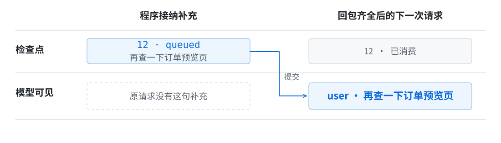
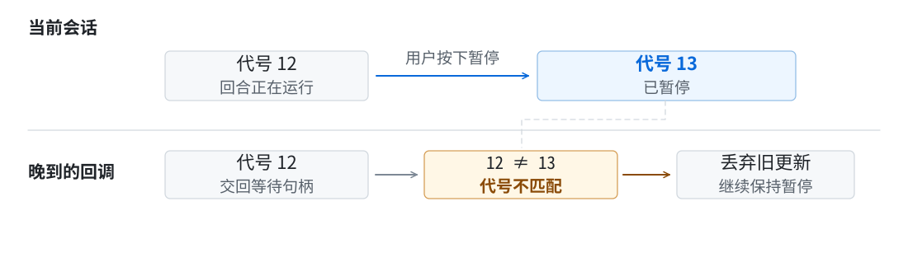

用户中途补了一句，怎么接上正在做的事？
价格回归测试 run-price-7 还在运行，主会话已把 TaskWait 的回包和等待条件保存下来。你在终端补了一句“再查一下订单预览页”。输入框清空了，测试的终态仍没回来。程序能让模型先查预览页吗？如果它醒了，那趟测试还在吗？
终端收到，模型什么时候看到？
输入框刚清空，终端要是在此时退出，重开后还能找到“再查一下订单预览页”吗？按源码推演，若存会先给这句话一个顺序号 12，把 12、输入原文和 queued 状态存进检查点，提交成功才让界面确认接纳。这份检查点里的模型消息仍是原来那一版。用户的要求已经收好，交给模型还要等一个时点。

src/ruocun/session/conversation.py · 第 220–230 行
async def queue_user(self, session: Session, content: str | list[dict[str, Any]], *,
model_content: str | list[dict[str, Any]] | None = None) -> AcceptedInput:
"""把排队输入的身份和当前检查点一起提交，确认后才返回接纳回执。"""
async with self._checkpoint_lock:
safe_content = self._safe(content)
if safe_content != content or self._safe(model_content) != model_content:
raise ValueError("此输入含当前账户凭据，无法完整保存；未接纳排队，请保留原输入并移除凭据后重试。")
seq = max((entry.seq for entry in self._accepted_inputs), default=0) + 1
item = AcceptedInput(str(uuid.uuid4()), seq, packQueuedInput(safe_content, model_content), (), "queued")
await self._commit(session, session.messages, (*self._accepted_inputs, item))
return item看 _commit 的两个参数。session.messages 原样传过去，新增的是输入账本里的 item。如果提交没有得到确认，函数到不了 return item，调度器也会暂停并回报保存出了问题。写成功后即使程序意外退出，也还有一条待处理输入可以核对。把输入直接推到内存里的请求草稿，界面也能说“收到了”，只是进程退出时这条要求可能一起丢掉。
模型还在等一组工具结果
把输入时间拨早一点。模型在准备等待前刚发起两项读取，一条查价格配置，一条查测试说明。价格配置的结果到了，测试说明的结果还在路上。此时把补充塞进历史，下一次请求就可能拿到一组没有配齐的工具消息。到下一次准备问模型时，若存先核对这两份回包，再由调度器按 seq 取排在最前的输入。会话一次提交新增的 user 消息和消费状态，随后才能拿这份历史发请求。用户紧接着说“只看会员页”，两句话也按这个顺序进入后续历史。 调度器在边界按序消费 · 一并提交消息和消费状态
连着补两句，会不会抢先开第二个回合？调度器用例让原回合保持忙碌，连收两句补充。消费前历史里只有首条输入，到了消费边界，两句才按提交顺序加入，整个过程只启动过一次回合。 按序消费且不开第二个回合的用例（项目回归测试）
同样在两项工具执行时按普通回车发送补充，Claude Code 会等这批工具结束再把它交给当前回合。两边都把新目标留到工具结果齐全后处理，避免半批结果和补充混在一起。若存还可以问接纳之后的事。比如进程刚确认接纳就退出，恢复时能从 queued 记录看出这句仍待消费。 Claude Code 的消息排队规则
主会话醒了，原测试还在吗？
回包齐了也可能还在等。开篇的 TaskWait 已经交回自己的结果，剩下的是等待后台测试的终态。这时模型可以先接补充，无须陪 run-price-7 等到结束。调度器发现排队输入，可以解除这次等待，重新安排前台。模型读到“再查预览页”后可以先去找页面使用的价格入口。此时 run-price-7 仍可在后台继续产生日志。 排队输入怎样解除前台等待
现在只替换用户说的话。“停掉原测试，只查预览页。”前台依然通过同一条输入路径接收这句话，接下来要对 run-price-7 提出停止，并查同一趟运行怎样结束。释放等待只腾出了前台。取消测试要由原执行器收尾，终态仍从那里取。面试里的排障也是一样。用户让你优先看内存，先前已经采到的 CPU 结果可以留着。持续采样是否还该继续，要看新的目标和原采样进程的状态。 按原运行提出停止并确认结果
工具暂停等人时
假设程序追到预览页后想改一份说明，前台出现一个编辑确认框。这里等的是那次编辑的批准，只有能关联到该调用的同意才能让它往后走。拒绝、取消或确认未完成，都要以对应工具回包报告给原调用。一条排队的“继续查”只是补充目标。终端在确认框里输入的文字由该交互处理，普通聊天输入则走自己的队列。 回看一次审批怎样收尾
run-price-7 仍没有终态。用户补了“先看会员页”，界面确认接纳。随后主会话开始读页面代码，但列表上原测试仍写着“运行中”。这次前台继续是何时发生的？如果还要确认原测试已经停掉，你会查哪一份记录？
核对判断
排队输入让调度器解除等待，模型在下一次合适的请求读到补充后可以先读页面。用 run-price-7 找原执行器的停止及终态回执。会话醒了、页面读了，只能确认前台有进展。
暂停之后到达的旧回调
刚才用户只补了一句话。换一种情况，用户这时按的是暂停。调度器给每趟正在运行的回合一个代号，方便识别过时的回调。假设当前的代号是 12。这趟回合刚准备回报 waiting，回调还没来得及处理。调度器把当前代号推进到 13，释放等待并发出停止信号。过了一会儿，第 12 代仍交回来一个确实有效的等待句柄。若直接使用回调结果，界面就会从“已暂停”倒退成“等待中”。

src/ruocun/agent/session_scheduler.py · 第 263–277 行
result = await self._run(signal, boundary, generation)
if generation != self._generation or self._state in {"paused", "closed"}:
return
if result.status in {"cancelled", "interrupted"} or signal.is_set():
self._state = "idle" if self._queued() else "paused"
await self._set_state(self._state)
return
if result.status == "waiting":
handle = getattr(result, "wait", None)
if handle is None or self._background is None:
raise RuntimeError("等待缺少当前会话运行时。")
self._wait = handle
self._state = "waiting"
self._background.activate(handle)
await self._set_state("waiting")_run 出发时带着 12，回来先与 self._generation 里的 13 相比。条件成立就返回，下面的 activate(handle) 走不到。句柄有效说明旧工作曾走到这一步。有没有资格改当前会话，还要看它的代号。这层检查管的是回合的调度状态。流式文字也会核对当前代号再接受。后台测试已有的输出和终态继续按原运行身份保留。 暂停如何使旧代失效
点选项会回答哪一次请求？
模型找到两个入口，要你选“核对网页预览”还是“核对导出文件”，于是发起一次 AskUserQuestion。在提问框里选“网页预览”，选项是这次工具的返回值，主循环拿它配回原调用编号。界面交回空串时，工具可以报告用户未回答。若回合已取消，工具会报告用户中断。
如果你在普通聊天框发送同样的“网页预览”，程序把它登记为新的用户输入。重开会话时可以回查两种记录：前者归在那次提问的工具结果里，后者消费后才会成为新的 user 消息。凭文字一样就拿一条聊天消息补上工具回包，会把原提问的实际状态写错。 用户选择怎样从提问工具返回
批准方案以后还有哪道判断？
模型在计划模式提出“先核对预览页，再修页面实际调用的计价逻辑”。在交互会话里，你通过 ExitPlanMode 的选择同意实施，若存把模式切回 normal。如果随后模型交来一个 Edit，程序还要看当时的模式与它真正要写的位置。用户可以批准实施方案，同时保留对某一次实际写入的决定。 同意方案时改变的状态 · 实际编辑的授权怎样决定
这一章带走什么
界面确认收到补充时，程序已经把这句话存成待处理。手头的工具回包还没齐，就等它们齐了再把这句话交给模型。这样重开会话时，队列里仍能找回待处理的补充。
「停止等结果和要求原执行器停止，要查两份证据。」 用户只说“先查预览页”，前台可以醒来，原测试仍能在后台跑。要确认测试停了，就按原运行编号查它的终态。
页面入口和回归用例要各查一遍。什么时候值得把其中一条线交给子代理？
面经自测
Agent 正在排查服务器卡顿，用户又补了一句“重点看内存”。怎么让新要求接上正在做的事？
字节跳动 · 二面 · 面经原帖 · 题意转述
展开参考回答
我先把新要求按顺序保存，在已发出的工具请求和结果配齐后，让下一次模型请求看到它。接着判断新要求是补充方向，还是明确叫停原操作。
排障时改为重点看内存，可以留下前面取得的检查结果。价格测试时用户说“再查预览页”也是一样：保留原测试，加上预览页检查；要停进程则另按原运行编号取消。
有些工具必须得到人工批准。任务如何表示等待、批准、超时或者取消？
展开参考回答
把要决定的那次调用和具体参数保留下来。批准或拒绝都回到这一项。等待期间超时、取消或原回合失效，就按实际原因收尾。
界面说“已收到”，是不是说明模型已读到了这句补充？
若存设计题
展开参考回答
旧回合已经暂停，又回来一段输出，怎么防止它盖掉新回合？
若存设计题
展开参考回答
程序让前台开始等后台结果，为什么用户还能继续输入？
若存设计题
展开参考回答
在提问框里回答，和在聊天框补一句，在历史中怎么区分？
若存设计题
展开参考回答
退出计划模式后，后面的所有编辑都自动获准了吗？
若存设计题